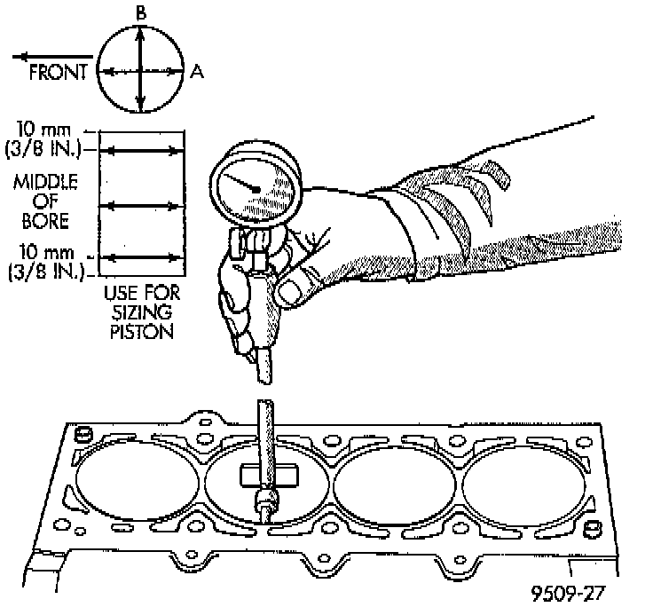

Cylinder Block Assembly: Testing and Inspection

CLEANING
Thoroughly clean the oil pan and engine block gasket surfaces. Use compressed air to clean out:
^ The galley at the oil filter adaptor hole.
^ The front and rear oil galley holes.
^ The feed holes for the crankshaft main bearings.
Once the block has been completely cleaned, apply Loctite PST pipe sealant with Teflon 592, or equivalent to the threads of the front and rear oil galley plugs. Tighten the plugs to 34 Nm (25 ft. lbs.) torque.
CYLINDER BORE INSPECTION
1. It is mandatory to use a dial bore gauge to measure each cylinder bore diameter. To correctly select the proper size piston, a cylinder bore gauge, capable of reading in 0.003 mm (0.0001 inch) INCREMENTS is required. If a bore gauge is not available, do not use an inside micrometer.
2. Measure the inside diameter of the cylinder bore at three levels below top of bore. Start perpendicular (across or at 90°) to the axis of the crankshaft and then take two additional reading.
3. Measure the cylinder bore diameter crosswise to the cylinder block near the top of the bore. Repeat the measurement near the middle of the bore, then repeat the measurement near the bottom of the bore.
4. Determine taper by subtracting the smaller diameter from the larger diameter.
5. Rotate measuring device 90° and repeat steps above.
6. Determine out-of-roundness by comparing the difference between each measurement.
7. If cylinder bore taper does not exceed 0.025 mm (0.001 inch) and out-of-roundness does not exceed 0.025 mm (0.001 inch), the cylinder bore can be honed. If the cylinder bore taper or out-of-round condition exceeds these maximum limits, the cylinder must be bored and then honed to accept an oversize piston. A slight amount of taper always exists in the cylinder bore after the engine has been in use for a period of time.
HONING
The honing operation should be closely coordinated with the fitting of pistons and rings. This will ensure specified clearances are maintained.